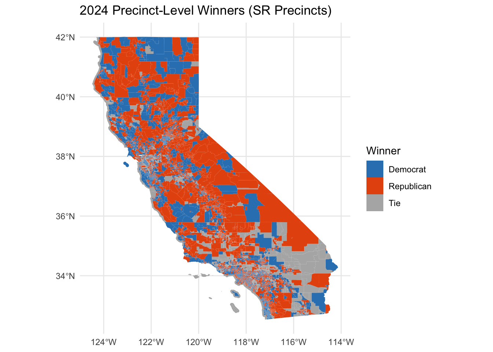
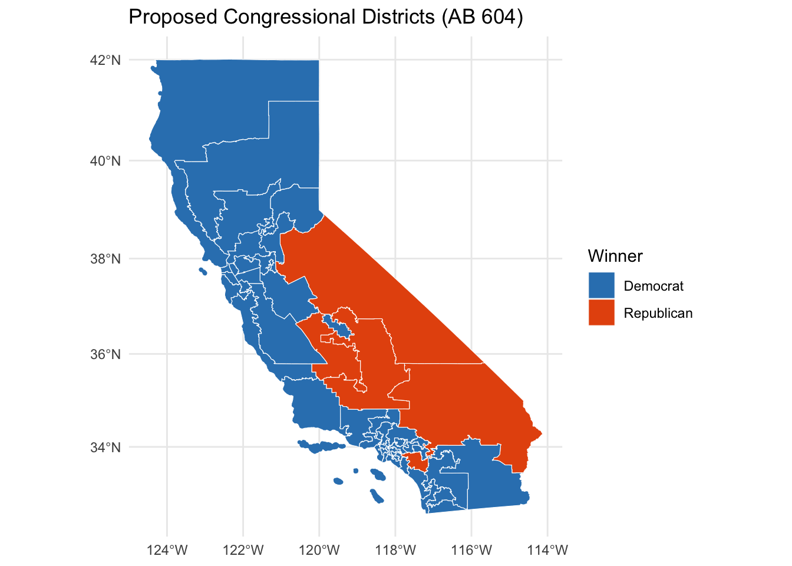

library(tidyverse)
library(janitor)
library(sf)
library(ggplot2)Gerrymandering Dashboard
Introduction
This dashboard compares the 2024 California U.S. House election results under:
- The actual 2024 congressional district assignments (using the official
CDDISTfield from the Secretary of State’s Statement of Vote), and
- The proposed AB 604 congressional district map, using area-weighted interpolation of SR precinct results.
We evaluate:
- Seats won by Democrats and Republicans
- Mean–median score
- Efficiency gap
- A precinct-level map for 2024
- A district-level map for AB 604
Methodology
This project uses three primary datasets:
(1) SV-precinct Statement of Vote (SOV) data for 2024,
(2) SR-precinct shapefile + SR-precinct SOV, and
(3) AB 604 proposed congressional district shapefile.
1. Cleaning and Preparing SV Precinct Data
The SV-level 2024 SOV data were cleaned by standardizing column names with janitor::clean_names() and converting all vote-count columns (e.g., cngdem01, cngrep01) to numeric using parse_number(). The cleaned data were aggregated by the official cddist column to produce true district-level 2024 results.
2. Preparing SR Precinct Geometry and SOV
Because the AB 604 boundaries do not align with SV precinct boundaries, the project uses SR precincts, which have exact geographic shapes suitable for interpolation.
SR shapefiles were processed by:
- Reprojecting to EPSG:3310 (California Albers, equal-area projection)
- Snapping geometries to 1-meter precision
- Applying st_make_valid() to repair invalid polygons
- Merging SR SOV using srprec_key
These steps ensure clean geometric intersections.
3. Area-Weighted Interpolation (Approach A)
To simulate how each SR precinct contributes votes to each AB 604 district:
- Each SR precinct polygon was intersected with each AB 604 district polygon.
- The area overlap fraction
( = / )
was computed for each portion.
- Each SR precinct’s vote totals were multiplied by these weights and summed within each AB 604 district.
This produces estimated Democratic and Republican votes for each new district.
4. Gerrymandering Metrics
Both district plans were evaluated using:
- Mean–median score, measuring skew in district vote shares
- Efficiency gap, comparing wasted votes between parties
These metrics assess whether the proposed plan changes the partisan structure of the map.
5. Mapping
The 2024 map is visualized at the precinct level using SR precincts, showing which party won each geographic area.
The AB 604 map displays district-level winners, because the interpolation step provides complete district-level results for the new plan.
Helper Functions
mean_median_score <- function(d_votes, r_votes) {
total <- d_votes + r_votes
share <- d_votes / total
mean(share, na.rm = TRUE) - median(share, na.rm = TRUE)
}
efficiency_gap <- function(d_votes, r_votes) {
total <- d_votes + r_votes
threshold <- floor(total / 2) + 1
d_wins <- d_votes > r_votes
wasted_d <- ifelse(d_wins, d_votes - threshold, d_votes)
wasted_r <- ifelse(d_wins, r_votes, r_votes - threshold)
sum(wasted_d - wasted_r, na.rm = TRUE) / sum(total, na.rm = TRUE)
}Load and Prepare Data
2024 Map (District-Level Votes)
sov <- read_csv("data/clean-sov.csv", show_col_types = FALSE) |>
clean_names()
district_2024 <- sov |>
group_by(cddist) |>
summarise(
d_votes = sum(cngdem01, na.rm = TRUE),
r_votes = sum(cngrep01, na.rm = TRUE),
.groups = "drop"
) |>
filter(d_votes + r_votes > 0) |>
mutate(
winner = case_when(
d_votes > r_votes ~ "Democrat",
r_votes > d_votes ~ "Republican",
TRUE ~ "Tie"
)
)AB 604 Map (District-Level Votes)
newmap_district_votes <- read_csv("data/newmap-district-votes.csv",
show_col_types = FALSE) |>
clean_names()
newmap_district_votes <- newmap_district_votes |>
mutate(
new_cdd = as.integer(new_cdd),
winner = case_when(
d_votes > r_votes ~ "Democrat",
r_votes > d_votes ~ "Republican",
TRUE ~ "Tie"
)
)Summary Statistics
seats_dem_2024 <- sum(district_2024$d_votes > district_2024$r_votes, na.rm = TRUE)
seats_rep_2024 <- sum(district_2024$r_votes > district_2024$d_votes, na.rm = TRUE)
mm_2024 <- with(district_2024, mean_median_score(d_votes, r_votes))
eg_2024 <- with(district_2024, efficiency_gap(d_votes, r_votes))
seats_dem_ab604 <- sum(newmap_district_votes$d_votes > newmap_district_votes$r_votes, na.rm = TRUE)
seats_rep_ab604 <- sum(newmap_district_votes$r_votes > newmap_district_votes$d_votes, na.rm = TRUE)
mm_ab604 <- with(newmap_district_votes, mean_median_score(d_votes, r_votes))
eg_ab604 <- with(newmap_district_votes, efficiency_gap(d_votes, r_votes))
comparison <- tibble(
plan = c("2024 Map", "AB 604 Map"),
dem_seats = c(seats_dem_2024, seats_dem_ab604),
rep_seats = c(seats_rep_2024, seats_rep_ab604),
mean_median = c(mm_2024, mm_ab604),
efficiency_gap = c(eg_2024, eg_ab604)
)
comparison# A tibble: 2 × 5
plan dem_seats rep_seats mean_median efficiency_gap
<chr> <int> <int> <dbl> <dbl>
1 2024 Map 44 9 -0.0116 -0.260
2 AB 604 Map 47 5 0.0310 -0.206Maps
2024 Precinct-Level Winners (SR Precincts)
sr_votes <- read_csv("data/shapefiles/state_g24_sov_data_by_g24_srprec.csv",
show_col_types = FALSE) |>
clean_names()
sr_shp <- st_read("data/shapefiles/srprec_state_g24_v01_shp /srprec_state_g24_v01_shp.shp",
quiet = TRUE) |>
clean_names()
sr <- sr_shp |>
left_join(sr_votes, by = "srprec_key") |>
mutate(
winner = case_when(
cngdem01 > cngrep01 ~ "Democrat",
cngrep01 > cngdem01 ~ "Republican",
TRUE ~ "Tie"
)
)
ggplot(sr) +
geom_sf(aes(fill = winner), color = NA, size = 0.05) +
scale_fill_manual(values = c("Democrat" = "#3182bd",
"Republican" = "#e6550d",
"Tie" = "grey70"),
na.value = "grey80") +
labs(
title = "2024 Precinct-Level Winners (SR Precincts)",
fill = "Winner"
) +
theme_minimal()
AB 604 District Winners
ab604_raw <- st_read("data/shapefiles/AB604/AB604.shp",
quiet = TRUE) |>
clean_names()
ab604 <- ab604_raw |>
mutate(district = as.integer(district)) |>
left_join(newmap_district_votes, by = c("district" = "new_cdd"))
ggplot(ab604) +
geom_sf(aes(fill = winner), color = "white", size = 0.2) +
scale_fill_manual(values = c("Democrat" = "#3182bd",
"Republican" = "#e6550d",
"Tie" = "grey70"),
na.value = "grey80") +
labs(
title = "Proposed Congressional Districts (AB 604)",
fill = "Winner"
) +
theme_minimal()
Final Comparison
comparison# A tibble: 2 × 5
plan dem_seats rep_seats mean_median efficiency_gap
<chr> <int> <int> <dbl> <dbl>
1 2024 Map 44 9 -0.0116 -0.260
2 AB 604 Map 47 5 0.0310 -0.206